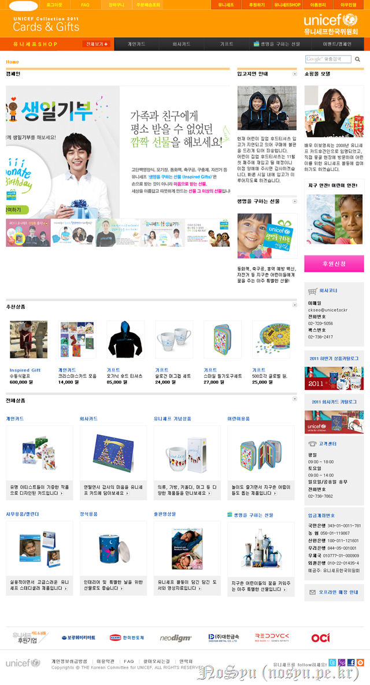

변하지 않기를 바라는 어리석음은 비단 위험한 것이지만, 변하지 않기를 바라는 희망은 언제나 존재하는 것 같구나.
오늘 너의 생일을 축하할 수 있게 된 것도 비단 변하지 않기를 바라는 희망이 존재하기 때문이 아닌가 싶다.
이번에도 어김없이 생일 맞이 기부가 진행되는구나. 올해는 장학금이 따로 없어 그 돈은 쌓이지 않았지만, KAIST 입학 이후 국가와 연구실에서 나오는 장학금이 있어 얼추 비슷하게 채워지는 듯싶구나.
그렇게 계산해보니 이번에 기부할 돈은 410,454원이구나. 작년보다 많이 늘었네? 어라? 아아... 중간에 애드센스 환전도 하고 덧붙여 복권이 당첨되어 그 수익과 당첨금 전부를 기부하기로 했기 때문이지...^^
작년에 여러 곳에 기부하였지만, 중구난방으로 하여 제대로 실행이 되었는지가 의문인 것이 사실이야. 그래서 이번에는 두 군데에 집중하기를 그리고 조금 다르게 하기를 바랄게.

Unicef를 가보니 유니세프SHOP이라는 곳이 있더라. 그 곳에 있는 제품을 구입하면 수익금으로 아이들에게 도움을 주는데 사용이 된다고 하는구나.
티셔츠를 구입하면 저러한 도움을 줄 수가 있다고 하는구나. 마침 메인 화면을 보니 티셔츠를 판매하는구나.
더하여 김연아 선수가 추천한다고 하는구나. 그리 추천할 필요가 있는가 싶기도 하지만, 마케팅이란 것이 다 그런 것인가 보구나. 마침 티셔츠는 어린이 보호에 사용되는 것 같으니 더욱 너의 철학에 맞는 것이지?
그리고 더하여 unicef에서 '생명을 구하는 선물'이라는 것이 있구나. 여기에 있는 물품을 구입하면 그것을 필요한 아이들에게 전달하는 것이라고 하더군.
그래서 내가 추천하는 것은 '어린이 보호' 카테고리에 있는 다음 두 가지야.
연필과 동화책. 처음에는 공책을 생각했으나 동화책에도 낙서를 할 수 있을 것이고 더군다나 무언가 읽고 접하는 것이 쓰고 배우는 것보다 더 중요하지 않나 싶어서 추천했어.
자 이렇게 추천했어.
무슨 인터넷 쇼핑몰 결제하듯 장바구니에 상품을 담아 결제를 하였구나. 그래도 전처럼 무작정 기부하는 것보다는 물품을 지정하는 것이 조금 더 도움이 되지 않을까 싶어.
물론 예외사항을 두고 있기는 하지만 어찌되었든 해당 사업 안에서 돈이 될지 않을까 기대할 뿐이야.
자.. 다음은 국내야. 사실 요즘 환율이 너무 안 좋아서 같은 한화로 기부를 해도 그리 도움이 안 될 것 같아. 거기에 국내 역시 어려운 환경/사람이 많다는 것을 알고 있기에 국내 관련 캠페인을 추천하려고 해.
그 첫 번째가 Save the Children에서 하고 있는 '나홀로아동 없는 세상만들기'야.
부모의 맞벌이 등으로 홀로 지내는 아동이 있다는 것은 너도 경험하였으니 잘 알고 있을 거야. 너야 어렸을 때 잘 지냈고 큰 탈이 없이 지냈지만, 지금 생각해보면 네가 혼자 있는 것에 대해 부모님이나 다른 어르신들이 걱정이 많았던 것은 사실이야. 그러하기에 그런 아이들이 위험에 처하지 않도록 부모와 어른들의 걱정이 없도록 지원하는 것은 중요하지.
프로그램을 살펴보니 여러 활동들을 지원하는구나.
네가 있는 곳 근처에도 아동센터가 하나 있는 것을 보니 미약하지만 지원이 여러 가지로 되고 있는 것 같구나.
두 번째로 추천하는 것은 '다문화가정 아동지원'이야.
정확히 무엇을 한다는 것이 없어 모호하기는 하지만, 그래도 난 이런 다문화가정에 대한 보살핌이 있어야 한다고 보는 입장이야. 최근에 영국에서 이주민들을 대상으로 난동이 발생한 것 알지? 그리고 북유럽에서도 이런 이주민에 반발한다면서 총기난사사건을 일으킨 경우도 있지. 그 때 그 용의자가 우리나라가 단일민족이라 좋다고 했는데 내 생각에는 조만간 우리나라도 한 번 그런 일이 발생하지 않을까 싶어.
코시안이라는 표현이 나올 정도로 아시아 사람들과 결혼한 한국 사람들이 많고 그 사이에 태어난 아이들이 많으며 더하여 그 아이들이 선거권 등을 행사할 나이가 된다면 분명 한 번 큰 갈등이 발생하지 않을까 싶어. 그 갈등이 발생하지 않게 막는다는 것은 절대 있어서는 안 되는 일이기에 그 갈등을 완화시킬 수 있도록 어렸을 때부터 보살핌/사랑을 받도록 하는 것이 좋은 일이 아닌가 싶어. 그래서 추천하는거야.
해당 후원은 정기후원이기에 각각 한 달에 1만원씩 1년 동안 총 24만원이겠구나.
그래서 이번에는 기부금이 설정한 것보다 초과하는 일이 발생하였네? ^^;; 뭐.. 어차피 생일 때 하는 기부금은 네가 조성한 기부금의 일부분이잖아. 그러니 상관 없지 않을까 싶어.
어찌되었든!
NoSyu! 너의 생일을 축하한다!
변화에 두려워하지 말고 점차 변해가면서 그 속에서 변하지 않는 무언가를 만들어가는
그런 멋진 아이/어른/사람/인물이 되기를 바란다!
NoSyu가 태어난지 9,497일 되는 날에...